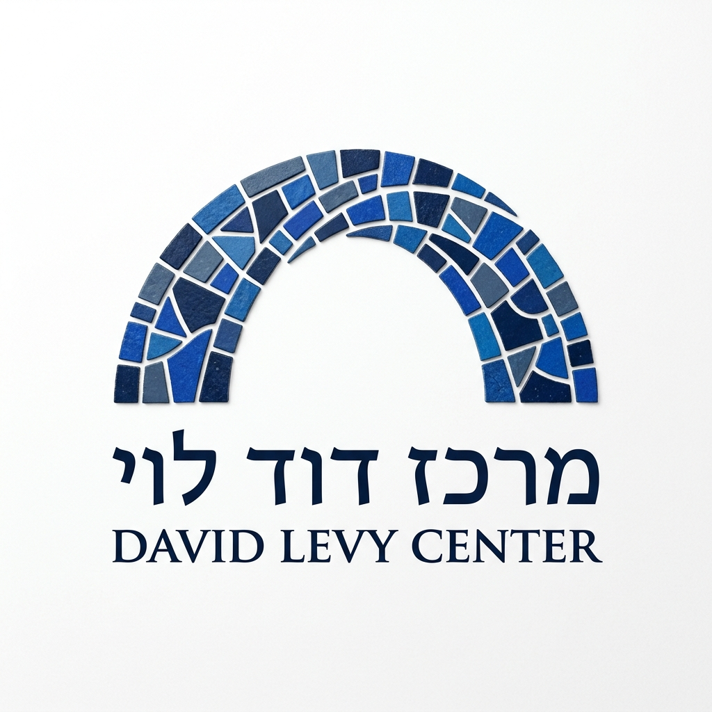

הצעה מס׳ 1
חלופת הגשר והפסיפס
שילוב של סמל הגשר המבטא חיבור בין חלקי העם, עם אריחי הפסיפס המבטאים את הייחודיות של כל קהילה ואדם.
הצעה מס׳ 2
חלופת העיגול והפסיפס
שילוב של סמל העיגול המבטא את האחדות והחיבור, עם אריחי הפסיפס המבטאים את ייחודה של כל קהילה ואדם.